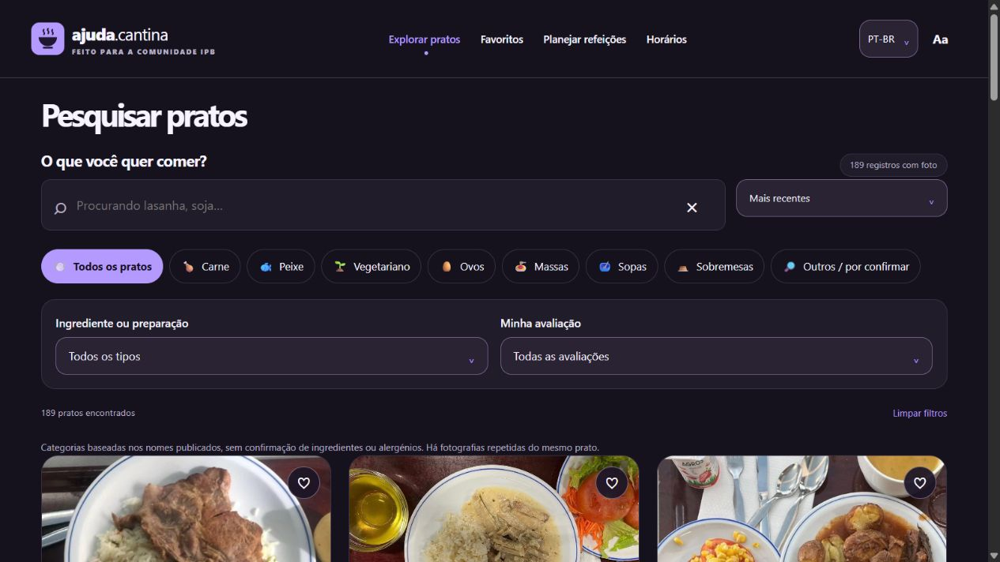
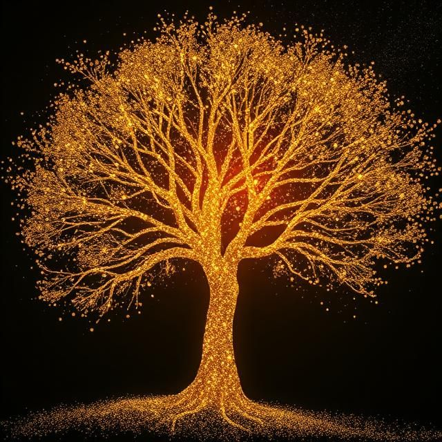
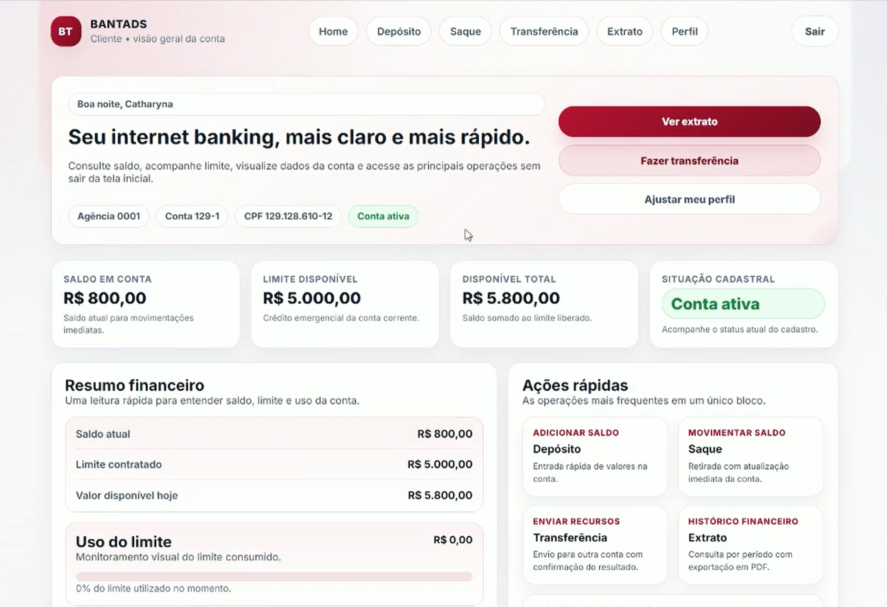
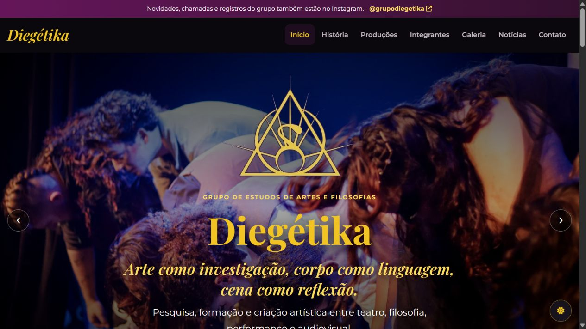
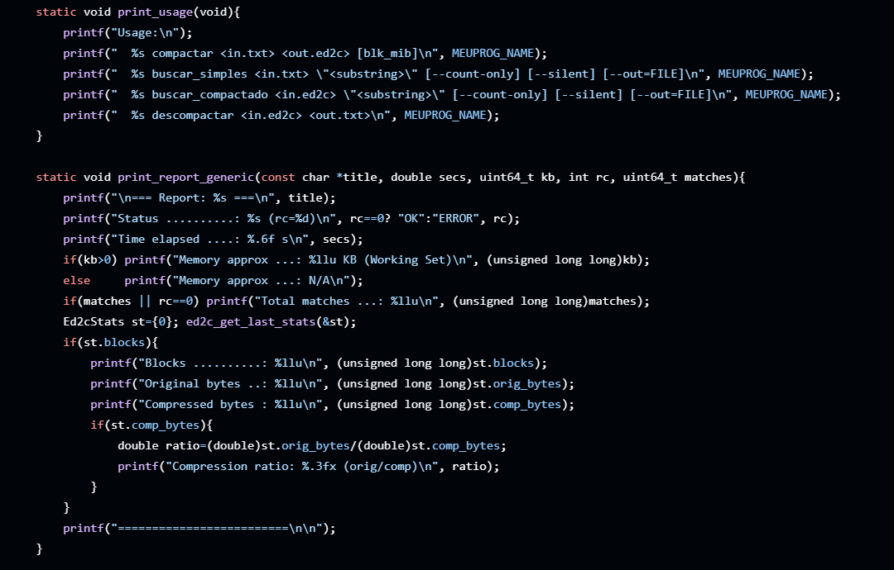
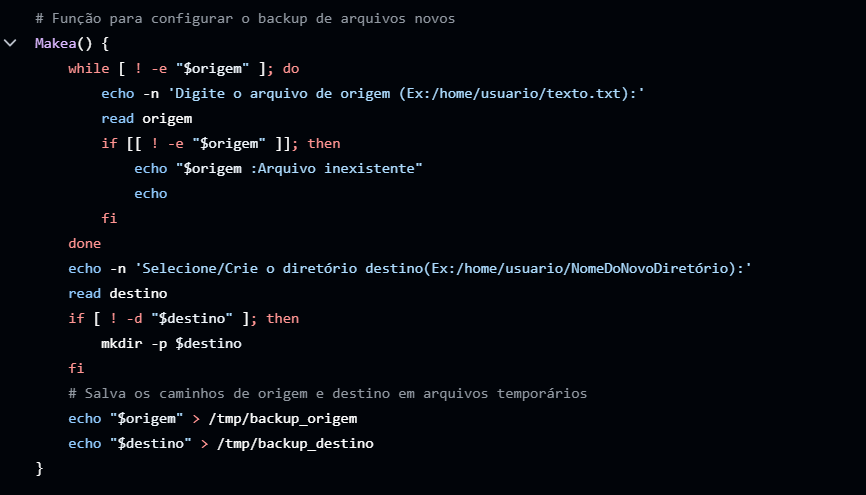
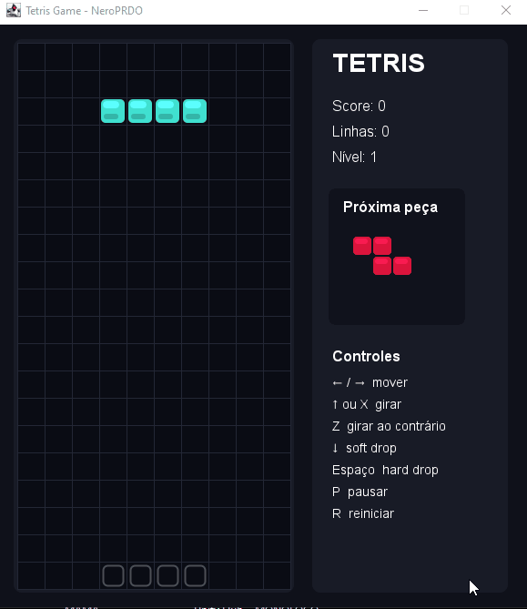

012026
Community platform · Web application
ajuda.cantina
A multilingual guide to the IPB canteen: browse dishes with photographs, plan meals and estimate a budget. A practical tool built around everyday student life.
Open to opportunities & freelance projects
Full Stack Web Developer & Software Analyst
From the first idea to the last detail. I connect interfaces, systems and data to build useful digital experiences.
Explore my work
Yggdrasil · Everything is connected
Bragança, Portugal · Working internationally
Scroll to discover01 / Selected work
A selection of projects across the web, mobile applications and software infrastructure. Explore the experience, then the code behind it.

Community platform · Web application
A multilingual guide to the IPB canteen: browse dishes with photographs, plan meals and estimate a budget. A practical tool built around everyday student life.

Distributed systems · Academic project
A banking application connecting an Angular interface to a Fastify gateway and Kotlin/Spring microservices, with RabbitMQ messaging and PostgreSQL and MongoDB databases.
Mobile application · Expense management
An expense-sharing application built with React Native, Expo and TypeScript, using Supabase. A mobile approach to organising shared expenses.

Cultural platform · Web development
A website for the DIEGÉTIKA theatre group and a companion editorial tool for preparing news, productions and galleries. The editor previews content and exports update packages.
Full Stack application · Academic project
An equipment maintenance application combining an Angular front end with a Java and Spring back end. Software analysis translated into a connected web system.

Algorithms · File processing
A C tool for block-based file compression and text search. It combines 12-bit LZW with KMP search and incremental decompression to search compressed content.

Infrastructure · Automation
A Bash backup tool using rsync and cron, with logging and configurable routines. Bringing repeatability and traceability to system administration tasks.

Game development · Desktop application
Tetris in Java Swing with seven classic pieces, rotation, scoring, levels, next-piece preview and a ghost piece. An exploration of 2D rendering, keyboard input and game states, organised with Maven.
PEDRO EDUARDO DALL’AGNOL
Based in Portugal. Connected to the world.
02 / The person behind the code
I’m Pedro Eduardo Dall’Agnol, a Brazilian developer based in Bragança, Portugal. I study Systems Analysis and Development at UFPR and am undertaking academic mobility in Computer Engineering at IPB in 2026–2027.
My work connects front-end and back-end development, software analysis, database modelling and network administration. I enjoy turning complex problems into clear, usable solutions.
Let’s talk03 / Expertise
Experience organised by area, from interfaces to infrastructure.
Responsive interfaces, interactions and web applications.
Application logic, object-oriented programming and software integration.
Data modelling, queries and database administration.
Network simulation and analysis, virtualisation and technical support.
Prototyping, process modelling and technical documentation.
Version control, agile practices and visual communication.
Give these technologies a little push. Drag a tile, tap it or use the controls. The scroll changes their gravity.
A calm constellation. Motion is reduced in your preferences.
04 / A journey of learning
From the first lines of code in 2020 to academic mobility in Portugal. Knowledge built step by step.
My journey in technology began in 2020, exploring programming and the foundations of web development. Curiosity became a habit of building, testing and learning.
UFPR · Brazil · 2024—2027
Undergraduate technology degree in progress at Universidade Federal do Paraná. Expected completion: end of 2027.
Algorithms, data structures and object-oriented programming deepened my understanding of software. Databases, networks and systems added new layers to that foundation.
IPB · Bragança, Portugal · 2026—2027
Academic mobility at Instituto Politécnico de Bragança. An international experience expanding my technical knowledge and bringing new perspectives to collaborative work.
IPB BRAGANÇATurning life at IPB into a community project: a multilingual canteen guide that connects information, accessibility and meal planning.
ajuda.cantina ↗The moons of Varnor · A tale by Pedro Dall’Agnol
Two sisters. One cycle. Scroll to reveal their phases.
New moon
05 / The next connection
Have a project in mind or an opportunity to share? I’m open to freelance projects and professional opportunities in Portugal, Brazil and internationally.
+55 41 99777-3512 Bragança, Portugal
Every ending opens another path.
Follow the thread again